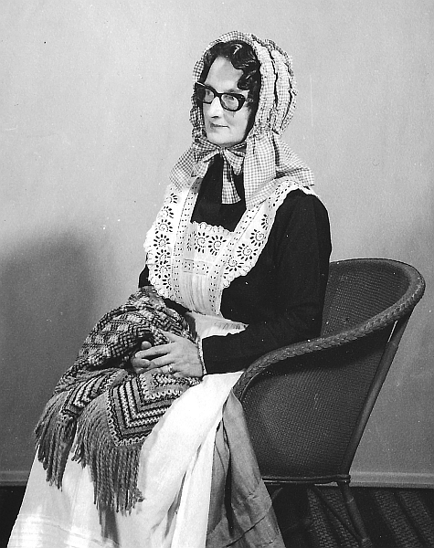

Les hommes, n'm'en pâlez pas. Lé v'là qué j'pâsse mes souaixante ans et j'n'ai pas mathié, mais ch'n'est pas manque d'êprouver. Quand j'tais janne j'ethais donné autcheune chose pouor aver un gallant — mais i' n'en voulaient rein d' mé.
Un dînmanche au sé, j'sortais d'la grande chapelle, j'viyais lé Fraînque Pirouët et j'lî dis — “Lé v'là la niet, Fraînque, et j'ai peux”. J'pensis qu'i' s'en aller dithe “Eh bein, vé-t-en, j'm'en allais t'conduithe.” .. mais, “N'y'avait pas dangi” i'm'dit. “Peux, ma pouôrre Margot, y'n'y a rein à aver peux. Prend couothage entre tes deux mains. Marche à bouan pas, tout s'sa bein si tu n'r'garde pas d'driéthe!” ... Sav'-ous bein qué j'mé touônnis d'bord et j'mé mîns à braithe.
Quand la traîsième d'mes soeurs fut pouor sé mathier, ou m'dit — “Margot, tu s'sas ma bridesmaid, dit! Ah, ch'n'est pas vrai, j'n'y s'sai pas! J'ai dêjà té pouor Alice et Élîzabé et tu n'a p't-être ouï qué “3 times a bridesmaid never a blushing bride!”
Ou m'èrgardit dans les ièrs et dit “J't'en prie, s'rai pas eune telle grand' bête.” Mais j'tcheins à ma pathole. Mais ou viyiz bein ch'est tout un tas d'niolîn car jé n'ai pas 'té bride auve tout ch'la! Mais ch'est aniet j'dis Dgieu mèrcie pouor ch'la car lé v'là mes trais pouôrres soeurs de mathiées et j'en ai pas mal veue dé lus cappeurs à ches chommes, quand j'ai 'té pouor dîner ou béthe du thée.
En ville l'Êté pâssé, j'rencontris Élîzabé... J'lî dis “Ma pouôrre Élîzabé, tu'as acouo chu vier chapé la — y'a combein d's' années qué tu l'as— chînq ans! Vé-t-en — ch'est aniet la Sale siez Briggs — i' faut aller vaie s'il' ont des bardgîns à nos donner.” Et j'avêmes à peine entré dans la boutique quand Lîzabé chouaîsit un bieau p'tit brun chapé avec eune belle plieunme dé picot — à vendre pouor Deux Louis! J'avêmes à peine entré dans l'bel quand Tom criyit d'la porte d'êtabl'ye — "Tchi dgiâtre qu'ous avez dans chutte grand' pouque à papi là.” L'yi dêhalant et l'yi mouontrant, Élîzabé lî dit “Ch'est un chapé” Quand i' vit le prix, i' faillait d'affoler “Et pourtchi eune plieunme de poule comme chenna sus l'haut,” i' voulait saver. J'li dis “Mais ch'n'est pas eune plieunme dé poule, ch'est dé picot!” Mais Tom n'tait pas gêné si ch'tait picot ou picotte - ch'tait pas li qui s'promen'nait avec lyi quand ou mettrait dité et i' gronnit tant, qué la pouôrre Élîzabé lî dit — “Ch'n'est pas à mé lé chapé— ch'est à Margot” et j'fus oblyigie d'donner Deux Louis à Élîzabé et j'm'en r'vîns avec san chapé! Oh, les hommes, n'm'en pâlez pas!
Longtemps dévant Noué, la deuxième de mes soeurs, Mabel, fit des arrangements d'aver toutes ses dents d'haut et bas, êrachies, lé 10 févri. Voul'-ous craithe, qué s'n homme, chu manniéthe de gros vier patot-là de Théophile, décidit dé plianter chu jour-là! J'dis à Mabel “N'té gene pas - j'veindrais pouor t' aîdgi et t'souongni.” Quand j'arrivis j'vis bein, par l'r'gard qué Théophile mé donnit—qu'i'n'tait pas content de m'vaie là et j' gronnis sus tout. À la bouochi — j'avais pas mîns assez d'chucre dans lé café. Et nous, à St. Saûveur, j'dinnons à eune heuthe — à St. Ouën, i' dinnent à douze heuthes — mais pèrsonne m'avez pas dit — et quand — vînt pouor diner, i' n'tait pas justément prêt. J'sis seux qu' i'juthit pus d'vîngt fais en Angliais et Jèrriais sans s' èrpéter deux fais — “Et tch'est qu's'n allait payi ses plianteurs pouor la démeuthe qu'tais arrêté pouor lus dinièrs être prêts” . . Ah, quand j'fus pouor dithe à bétôt à Mabel dévant m'en aller, j'lyi dit “Tu n'as pas qu'faithe dé mé d'mander à v'nîn pouor souongni tén ouaîsé car j'n'y veindra pas quand même, qu'i' sait à créver la faim ou la sé. Oh, les hommes, n'm'en palez pas!
Siez Alice, ch'tait l'même troubl'ye. Alice mé d'mandit si j'veindrais souongni lus p'tits tandi qué Françouais et lyi payi visite dé neuches à un d'lus anmîns. Toute contente, j'dis oui et lé jeudi à sept heuthes, j'filis. Quand j'arrivis la, Françouais 'tait à haut à s'graie quand lé v'là qui cri qu' sa pathe dé bliues cauches i'n'trouvait pas! Alice lyi dit “Met tes néthes pouor à ces se, car les bliues j'les ai lavé. Y'a un p'tit creux dans l 'orté et j'n'ai pas ieu le temps d'les graie!” . .“A la pièche dé couôrre à tan Woman's Institute et couôtre pouor les Bazaars, tu f'thais mus dé rester ichîn à couôtre ma cauche, c'mînses et drâses!” Et mé, pouor eune bordée d'fanne, j'lyi criyis d'à bas — “Voudrais-tu les meinnes! “ . . Man bouonnehomme — i'n fut longtemps d'vant v'nîn à bas et criyant bein haut, i'm' dit “Si tu'es v'nu pouor té fichi d'mé, tu peut t'en r'aller siez té.” Alice vit bein qui m'avait fait comme peux et l'yi dit — “Oh mais Françouais, crie pas d'même, assied té!” Et i' s'assiévit et dit qué pouor pèrsonne qu'n'ithait pas et voul'-ous craithe i'n'y fut pas! Quand vînt un temps, j' happis ma bourse et man chapé et j'lî dis de chu niolîn-chîn, “j'en ai ieu assez, et j'm'en r'vîns siez mé.”
Ah, i' disent qué les femmes pâlent pus qu'les hommes, p't-être bein, mais j'vos garantis qué l's hommes gronnent pus qu'les femmes, et quant à mé, j'n'en veurs rein. Oh, les hommes, n'm'en pâlez pas!
Eileen Le Sueur
Viyiz étout:
{kind=link}